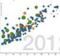
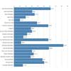
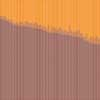

Visualizations
From the data we chose to create four graphs depicting certain areas we found to be of interest. The first graph depicts a bubble graph where the bubles change in size depending on the school population and the percentage of minorities is compared over tim with the percentage of those who recieved free or reduced lunch. The second visualization depict snapshots of the school districts Where graphs depicting certain categories*** are displayed over time for a chosen district. The third visulaization is a line graph over time depicting the percentage of a school needing free and reduced lunch for a given school. The fourth visualization is similar to the first visualization, however instead of breaking up by school, the data is broken up into categories based on the percentage of the minority population.
View or Download the Information for our Visualizations
| Visualization | Description | View | Download |
|---|---|---|---|
| Visual 1  | A bubble graph where the bubles change in size depending on the school population and the percentage of minorities is compared over tim with the percentage of those who recieved free or reduced lunch | View | Download |
Visual 2
 |
Snapshots of the school districts with graphs depicting certain categories are displayed over time for a chosen district | View | Download |
| Visual 3  | Line graph over time depicting the percentage of a school needing free and reduced lunch for a given school | View | Download |
| Visual 4  | Categories based on the percentage of the minority population depicting the percentage of a school needing free and reduced lunch over time | View | Download |